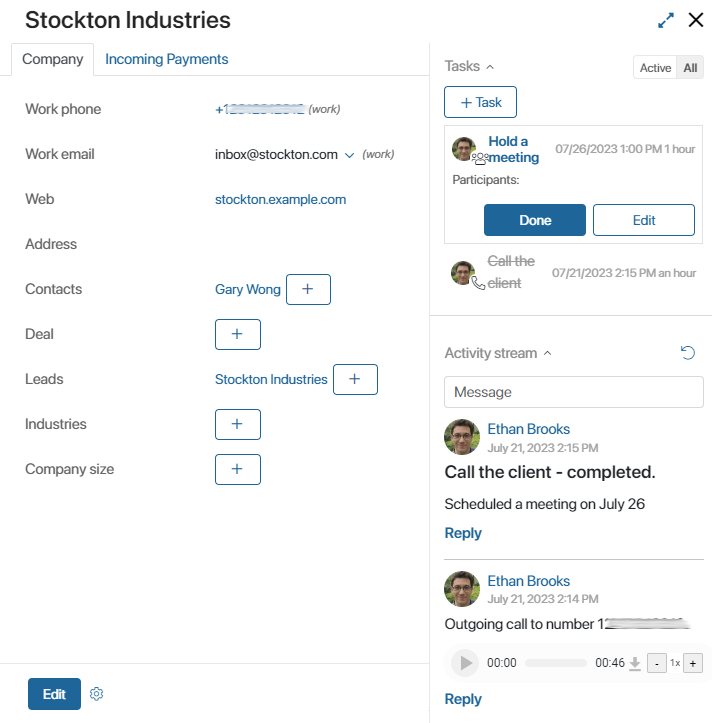
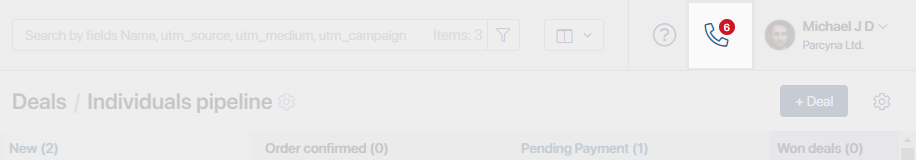
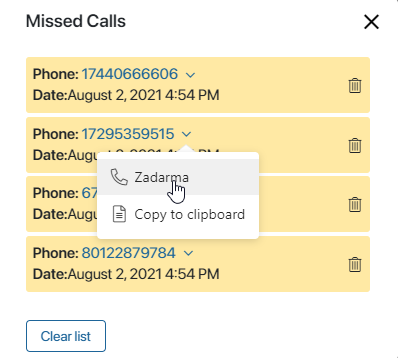

BRIX provides standard modules for integration with IP telephony providers. This allows you to identify the client by phone number, open the page of the corresponding app item (for example, a lead or a deal) while answering a phone call, and play call recordings directly on the page.
Set up telephony
There are three steps to setting up a telephony:
- Enable a standard module which provides an integration with an IP telephony provider.
BRIX offers standard modules for integration with IP telephony service providers. To enable one of these modules, go to Administration > Modules.
At the moment, the following modules are available:
- Bind IP telephony users and BRIX users.
After establishing a connection with the provider, the next step is to bind IP telephony users and BRIX users.
Finally, specify the app that you wish to link with the telephony module. It will be used to store client data, and its pages will open when incoming calls are received.
Read more about connecting and setting up the modules in the articles specified above.
Identify the client by number
When a client calls the sales department, the sales rep receives a pop-up notification in BRIX.
If the contact is already registered in the system, the notification will show the contact’s name and phone number as well as a link to the associated app items. For example, if the Companies app is selected in the telephony module’s settings, the notification will include deals, leads, and contacts associated with the company as well as the phone number.
When the sales rep clicks the notification, a page with full history of communications with the client opens. The history is stored in an item of the app specified in the module’s settings.
If the incoming number is not registered in the system yet, and sales reps haven’t answered the call, a new entry in the app specified in the module’s settings will be created automatically. If the user answered the call of an unregistered client, a form for creating a new app item will open.
Display and record calls
Incoming and outgoing calls are displayed on the app pages according to the following principles:
- All incoming and outgoing calls are displayed on the page of the app item specified in the module’s settings.
- If Contacts is the app selected in the settings, calls will also be shown in the activity stream of the deal and lead linked with this contact.
Calls can also be displayed in the associated activity stream of other apps associated with the one specified in the module. For example, if you want company pages to show calls associated with contacts linked with these companies, open the Companies app form in the advanced mode. In the settings of the Object activity stream widget, select Contacts.

You can leave comments to calls in order to have all important information close at hand. For example, you can specify that all tasks related to a call need to be rescheduled. To leave a comment, click Reply below the recording and enter your message.
Please note that the term during which recordings are stored in the telephony service is determined by the provider. During this period, you can view the history of communications with the client, listen to recordings, or download them to your PC. If you try to play a recording deleted by the provider in the BRIX interface, you will see the “File not found” error message.
Missed calls notification
The counter at the top of the page displays the total number of missed calls. This feature allows to retain information about every prospect and improve the company’s overall customer service.

To view missed calls, click the icon. In the missed calls list that appears, you can see the name and phone number of the client as well as the date of the call. If there is no information about the client in the system, the Name field will contain the phone number.
You can also call the client back without opening the page of the associated app. To do that, click the arrow next to the phone number. In the drop-down list, select the IP telephony provider.
